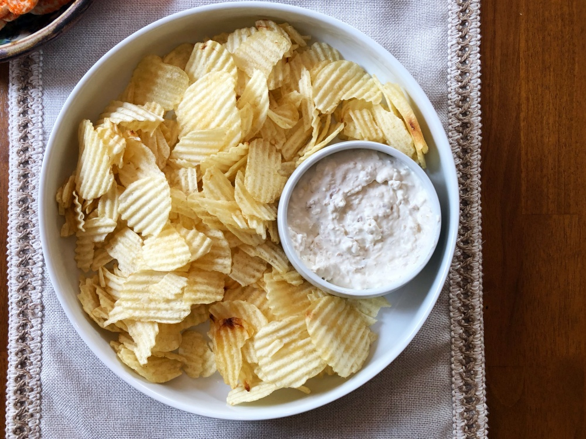

Clam & Cream Cheese Dip

Description
This is some delicious clam and cream cheese dip!
It's very easy to make and requires few ingredients!
Ingredients
- 1 can of clams
- 1 stick of cream cheese
- Salt and pepper
Steps
- Remove cream cheese from wrapping and place in a medium size bowl
- Mash cream cheese with a fork until formed to a liquid consistency
- Open clams and drain of liquid. Add clams to cream cheese.
- Mix dip together and refrigerate